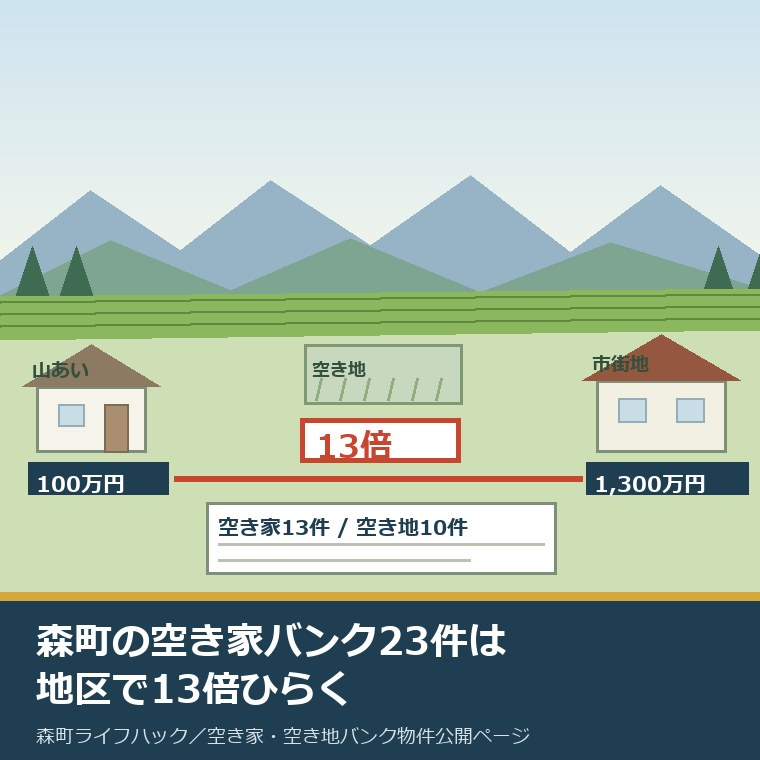
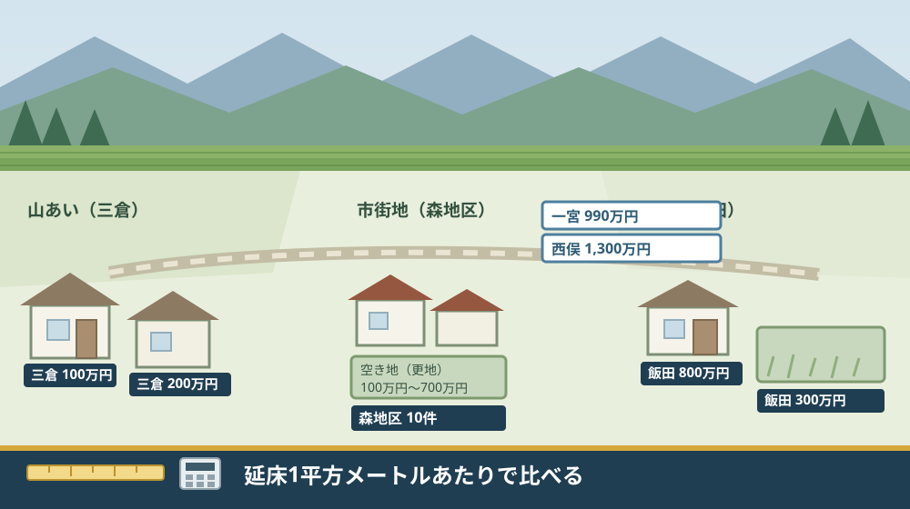
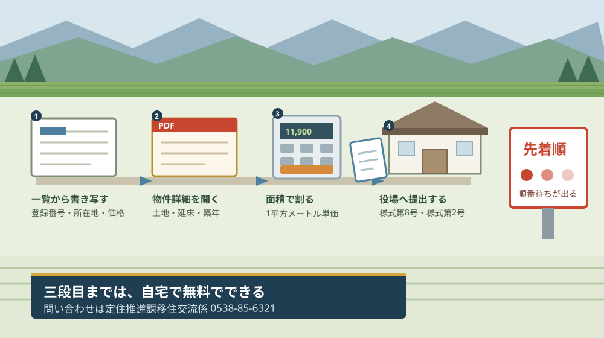

森町の空き家バンク23件｜地区別の価格は13倍ひらく

この記事の要点
Q. 森町の空き家バンクは、地区によって値段がかなり違うと聞きました。本当ですか。
A. 違います。ただし地区のせいだけではありません。2026年8月28日更新の公開ページには空き家13件・空き地10件の23件。売却価格が数字で出ている空き家8件は100万円から1,300万円まで13.0倍ですが、延床1平方メートルあたりに割り戻すと、差は面積と築年で説明がつきます。
静岡県周智郡森町（遠州森町）へ移住したい。あるいは、森町の実家をどうするか考え始めた。そのどちらの側からも、まず開くのが空き家バンクの物件公開ページです。この記事は、そのページを開いた日の次の一手を書いています。
私は磐田市で小さな不動産業を営んでいて、森町の空き家や実家じまいの相談も受けています。物件一覧を見て最初にやることは、価格を眺めることではありません。件数を数え、面積で割ることです。
今日は2026年8月28日です。森町の「空き家・空き地バンク物件公開ページ」の更新日は、まさに今日の2026年8月28日でした。登録は動いています。この記事の数字は、今日の一覧を数えたものです。
先に断っておきます。この記事に出てくる件数、平均、中央値、坪単価は、私が公開ページと各物件の詳細PDFから数えて計算したものです。森町がその数字を公表しているわけではありません。分母は必ず書きます。
公式情報から確定できること
2026年8月28日時点で、森町の空き家・空き地バンクの2ページから確認できたことを並べます。出典は記事の末尾に載せています。
一つ目。制度の目的が書かれています。森町空き家・空き地バンクのページは「空き家・空き地バンクは町内にある空き家・空き地の情報を登録・公開することによって物件の有効活用を図り、森町への移住・定住や地域の活性化を促進するための制度です。」としています。
二つ目。町は仲介をしません。同じページの注意事項は「町は空き家・空き地に関する情報提供のみを行い、物件の仲介、契約等については、一切行いません。また町は物件の管理を行いません。」と明記しています。
三つ目。公開ページに載っている物件は、空き家13件・空き地10件の合計23件でした。ページ本文に「13件」「10件」という件数の表示はありません。掲載されている登録番号を私が数えた実数です。
四つ目。空き家13件の登録番号は、71・74・82・84・87・91・114・115・116・123・飯101・125・127です。通し番号は連続していません。「飯101」だけ、番号の前に文字が付いています。
五つ目。空き地10件の登録番号は、29・37・64・66・69・73・81・83・93・122です。こちらも連続していません。
六つ目。公開ページは物件を「賃貸物件」と「売却物件」に分類して掲載しています。ページ本文は「空き家・空き地バンクに登録された物件の情報を、『賃貸物件』と『売却物件』に分類して掲載しています。」としています。
七つ目。空き家13件のうち、賃貸は3件です。登録番号71（城下）が月4万5千円、87（天宮）が月3万円、123（森）が4万円/月です。
八つ目。売却で価格が数字で出ているのは8件です。74（一宮）990万円、82（三倉）100万円、84（睦実）250万円、91（城下）200万円（価格応相談）、115（西俣）1,300万円、116（草ケ谷）860万円、飯101（飯田）800万円、127（三倉）200万円（価格応相談）です。
九つ目。残る2件は「応相談」で、数字が出ていません。114（中川）と125（森）です。
十番目。空き地10件のうち、価格が数字で出ているのは9件です。29（大鳥居）800万円、37（森地区 仲横町）100万円、64（森地区 天宮（開運町））700万円、66（森地区 天宮）500万円、69（西俣）400万円、73（森地区 城下）100万円、81（森地区 南町）500万円、83（向天方）460万円、93（飯田）300万円。122（三倉）だけが応相談です。
十一番目。一覧ページに面積・築年・構造は一切載っていません。それらは各物件の詳細PDFの中にあります。一覧の行にあるのは、登録番号と所在地の表記と価格だけです。
十二番目。詳細PDFへのリンクが無い物件が3件あります。空き家の74（一宮 990万円）と82（三倉 100万円）、空き地の81（森地区 南町 500万円）です。この3件は、面積も築年も公開情報からは分かりません。
十三番目。価格に消費税は原則として含まれない旨が注記されています。公開ページは「価格について、基本的に消費税は課税されません。ただし、事業性がある場合など、消費税の課税対象となる場合もあります。詳細は、媒介業者様へお問い合わせください。」としています。
十四番目。交渉は先着順です。公開ページは「空き家・空き地の優先交渉権は先着順とします。優先交渉権を得た方の結果が分かるまでは次の方は交渉できません。」と記しています。
十五番目。見学するにも書類が要ります。公開ページは、見学や交渉を希望する場合に「利用申込書:様式第8号」及び「同意書:様式第2号」を役場定住推進課へ提出するよう案内しています。
十六番目。利用要件は3つです。森町空き家・空き地バンクのページは、利用できる方を「空き家等に居住しようとする方」「空き地に住宅を建築して居住しようとする方」「その他、町長が適当と認める方」としています。
十七番目。移住した後の約束も書かれています。同ページの注意3は「空き家・空き地バンクにより移住された方は、町内会への加入及び地区行事への参加をお願いします。」としています。
十八番目。担当は森町役場の定住推進課移住交流係です。電話は0538-85-6321、所在地は〒437-0293 静岡県周智郡森町森2101-1です。

この絵で描きたかったのは、23件が町の中で均等に散らばってはいないという点です。市街地に集まり、山あいには数えるほどしかありません。
もう一つ描いたのは、手前に置いた巻尺と電卓です。価格の札だけを見比べても、地区の差は出てきません。面積で割って初めて、比べられる形になります。
23件を所在地の表記で並べ替えると、何が見えるか
公開ページの一覧には、物件ごとに所在地の表記があります。ここでは、その表記のまま23件を並べ替えました。表記をまとめたのは私で、地区への割り当ては後段で断りを入れます。
| 所在地の表記 | 空き家 | 空き地 | 合計 | 価格（万円。賃貸は月額） |
|---|---|---|---|---|
| 森・森地区（仲横町・南町を含む） | 2件 | 2件 | 4件 | 賃貸4万円／応相談／100／500 |
| 天宮（森地区 天宮の表記を含む） | 1件 | 2件 | 3件 | 賃貸月3万円／700／500 |
| 城下（森地区 城下の表記を含む） | 2件 | 1件 | 3件 | 賃貸月4万5千円／200／100 |
| 三倉 | 2件 | 1件 | 3件 | 100／200／応相談 |
| 飯田 | 1件 | 1件 | 2件 | 800／300 |
| 西俣 | 1件 | 1件 | 2件 | 1,300／400 |
| 一宮 | 1件 | 0件 | 1件 | 990 |
| 睦実 | 1件 | 0件 | 1件 | 250 |
| 中川 | 1件 | 0件 | 1件 | 応相談 |
| 草ケ谷 | 1件 | 0件 | 1件 | 860 |
| 大鳥居 | 0件 | 1件 | 1件 | 800 |
| 向天方 | 0件 | 1件 | 1件 | 460 |
この表を作って、私が最初に驚いたことを書きます。森町の六地区のうち「園田」と書かれた物件は、23件中1件もありません。森・三倉・飯田・一宮の4つは地区名がそのまま出てきますが、園田だけが出てこない。
天方も、地区名そのままでは出てきません。出てくるのは「向天方」という字名の空き地1件だけです。これを天方地区の物件と読むかどうかも、公開ページには書かれていません。
次に、森地区の集中です。「森」「森地区」と明記された物件が7件、そこに空き地の表記で「森地区 城下」「森地区 天宮」と書かれていることから同じ字だと読める空き家3件を足すと10件になります。23件の43.5パーセントです。
この10件という数え方は、私の読み取りです。公開ページは、空き家の欄では単に「城下」「天宮」と書き、空き地の欄では「森地区 城下」「森地区 天宮」と書いています。同じ字なのに、書き方がそろっていません。
三倉は3件でした。空き家2件（100万円、200万円（価格応相談））と空き地1件（応相談）です。六地区でいちばん人口の少ない地区に、23件のうち3件が集まっています。
残る睦実・中川・草ケ谷・大鳥居・西俣がどの地区に属するかは、このページからは判定できません。私も断定しません。字名から地区を引き直す作業は、読む側に丸ごと残されています。
価格を1平方メートル・1坪に割り戻す
ここからは数字の割り戻しです。分母を先に書き、私の計算であることを断っておきます。1坪は3.305785平方メートルで換算しました。
まず、空き家の売却8件です。合計4,700万円、平均587.5万円、中央値525万円。最低は三倉の100万円、最高は西俣の1,300万円で、13.0倍の幅があります。
この13.0倍という数字だけを見ると、地区で値段が決まっているように見えます。ところが、延床面積で割ると順番が入れ替わります。ここが、この記事でいちばん書きたかったところです。
| 登録番号・所在地 | 価格 | 延床面積 | 延床1平方メートルあたり（私の計算） | 築年 |
|---|---|---|---|---|
| 116 草ケ谷 | 860万円 | 49.68平方メートル | 約173,100円 | 昭和27年1月（築74年） |
| 115 西俣 | 1,300万円 | 139.32平方メートル | 約93,300円 | 平成6年9月（築31年） |
| 飯101 飯田 | 800万円 | 91.09平方メートル | 約87,800円 | 平成2年11月（築35年） |
| 84 睦実 | 250万円 | 69.41平方メートル | 約36,000円 | 不詳 |
| 91 城下 | 200万円（価格応相談） | 116.10平方メートル | 約17,200円 | 昭和53年10月（築47年） |
| 127 三倉 | 200万円（価格応相談） | 167.40平方メートル | 約11,900円 | 昭和52年4月（築49年） |
延床1平方メートルあたりで並べると、いちばん高いのは草ケ谷の約173,100円、いちばん安いのは三倉の約11,900円で、14.5倍の差になりました。価格の幅13.0倍より、むしろ開きます。
そして、面白い逆転が起きています。いちばん高い草ケ谷は、13件で最も狭く（延床49.68平方メートル）、最も古い（昭和27年1月・築74年）物件です。いちばん安い三倉127番は、この6件で最も広い（延床167.40平方メートル）。
この一行だけ取り出すと、変な話に見えます。狭くて古い家のほうが、1平方メートルあたりでは3倍以上高い。建物の値段ではなく、土地と立地に値が付いていると読むのが自然です。
空き地のほうが、その読み方をはっきり裏付けます。価格と面積の両方が分かる8件を坪単価に直しました。
| 登録番号・所在地 | 価格 | 土地面積 | 坪数（私の換算） | 坪単価（私の計算） |
|---|---|---|---|---|
| 64 森地区 天宮（開運町） | 700万円 | 264.48平方メートル | 約80.0坪 | 約87,500円 |
| 66 森地区 天宮 | 500万円 | 267.21平方メートル | 約80.8坪 | 約61,900円 |
| 83 向天方 | 460万円 | 379.97平方メートル | 約114.9坪 | 約40,000円 |
| 29 大鳥居 | 800万円 | 720.76平方メートル | 約218.0坪 | 約36,700円 |
| 69 西俣 | 400万円 | 436.00平方メートル | 約131.9坪 | 約30,300円 |
| 37 森地区 仲横町 | 100万円 | 237.22平方メートル | 約71.8坪 | 約13,900円 |
| 73 森地区 城下 | 100万円 | 276.61平方メートル | 約83.7坪 | 約12,000円 |
| 93 飯田 | 300万円 | 1,450.53平方メートル | 約438.8坪 | 約6,800円 |
空き地の坪単価は、いちばん高い天宮（開運町）の約87,500円から、いちばん安い飯田の約6,800円まで、12.8倍の幅がありました。29番の大鳥居だけは詳細PDFに「36,700円／坪」と町側の記載があり、私の計算とほぼ一致しています。
ここで、同じ「森地区」の中でも差が出ていることに注目してください。天宮（開運町）の約87,500円と、城下の約12,000円。同じ森地区の表記でありながら7.3倍です。
だから、私はこう言い切ります。森町の空き家バンクの価格を決めているのは、地区名ではありません。面積と、その土地が市街地に近いかどうかと、詳細PDFがあるかどうかです。
もう一つ、割り戻しておきたい数字があります。売却の空き地で最も広い93番（飯田）は1,450.53平方メートル、438.8坪で300万円。市街地の73番（森地区 城下）は83.7坪で100万円です。
同じ100万円台の予算でも、飯田なら438.8坪の3分の1、城下なら83.7坪の全部が買える計算になります。広さを取るか、市街地への近さを取るか。この二択が、はっきり数字に出ています。
賃貸の3件も並べておきます。城下の月4万5千円、森の4万円/月、天宮の月3万円。年額に直すと54万円・48万円・36万円です。
空き家の登録と補助の関係は残置物の処分に上限10万円が出る補助の条件を整理した記事に、地区ごとの暮らしの違いは森町を六つの地区から見た記事に書きました。
良い点：この公開ページの、よくできているところ
森町の空き家・空き地バンク物件公開ページには、評価したい点が5つあります。順に書きます。
一つ目。登録番号が、成約後も詰め直されていないことです。71から127まで飛び飛びに並んでいます。番号を詰めない運用だから、以前に見たときの番号がそのまま使えます。問い合わせのとき「82番の件で」と言えば話が通ります。
二つ目。詳細PDFの中身が、様式そのままで公開されていることです。登録申込書の記入欄が、用途地域も浄化槽の種類も水道の種類も含めてそのまま載っています。加工された紹介文より、こちらのほうが判断材料としては上です。
三つ目。空き地の一部にVR外観のページが用意されていることです。29・37・64・66・69・73の6件で、現地に行く前に周囲を見られます。片道の交通費と半日を使う前に、外せる候補が外せます。
四つ目。先着順であることを、あいまいにせず書いていることです。「優先交渉権を得た方の結果が分かるまでは次の方は交渉できません」。順番待ちが発生することを、申し込む前に読める形にしてあります。
五つ目。町が仲介も管理もしないと、はっきり書いていることです。移住支援というと町が最後まで面倒を見てくれる印象になりがちですが、そこは切ってあります。この線引きがあるから、宅建業者に頼むかどうかを早い段階で決められます。
注文したい点：地区で家を探す側から見て足りないところ
ここからは、地区を手がかりに森町の家を探している側の立場で、一事業者としての注文を4つ書きます。批判ではなく、使う側から見た報告です。
一つ目。所在地の表記が、六地区の名前でそろっていません。空き地では「森地区 城下」と書き、空き家では「城下」とだけ書く。同じ字を指しているのに、書き方が2通りあります。地区で絞り込みたい人は、まずこの読み替えから始めることになります。
二つ目。面積が一覧に無いことです。価格は一覧で横並びに見えるのに、面積は23件分のPDFを1つずつ開かないと分かりません。この記事の表を作るのに、私は13件のPDFを開きました。移住を検討している方に同じ作業を求めるのは、入口として重いと思います。
三つ目。詳細PDFが無い物件が3件あることです。74（一宮 990万円）、82（三倉 100万円）、81（森地区 南町 500万円）。価格だけが出ていて、面積も築年も分かりません。100万円と書いてあっても、それが何坪の何年の家なのかが読めないままです。
四つ目。最寄り駅やバス停までの距離の書き方がそろっていません。空き地の122番（三倉）には「秋葉バス（三倉）停 2.2km」「遠州森駅 12.0km」と具体的な距離が入っているのに、他の物件の様式にはこの欄が埋まっていません。1件だけ入っているということは、書ける欄はあるということです。

この図で描きたかったのは、三段目の電卓です。価格を延床面積で割るだけで、23件が横並びで比べられる形になります。特別な知識は要りません。
右端に「先着順」の札を置いたのには理由があります。比べるのに時間をかけすぎると、優先交渉権の順番が後ろになります。丁寧さと速さのどちらを取るかは、物件ごとに決めることになります。
対案・結論：今日、ご家族が確かめられること
森町の外に住んでいても、今日のうちに進められることがあります。順番に5つ書きます。役場が閉まっている時間でも、四つ目までは自宅で終わります。
一つ目。公開ページを開いて、気になる物件の登録番号・所在地の表記・価格を、そのまま紙に書き写してください。スクリーンショットではなく、手で書いたほうが後で比べやすくなります。
二つ目。その物件の「物件詳細」PDFを開いて、土地面積・延床面積・建築年月日・用途地域・水道・浄化槽の6つを書き足してください。PDFが無い物件は、その欄を空けたまま「PDFなし」と書いておきます。
三つ目。価格を延床面積で割ってください。売却なら1平方メートルあたり、空き地なら坪単価。この記事の表と比べれば、その物件が23件の中でどのあたりかが分かります。
四つ目。その所在地の表記が六地区のどれに当たるかを、地図で確かめてください。森・三倉・飯田・一宮はそのまま読めます。睦実・中川・草ケ谷・大鳥居・西俣・向天方は、公開ページからは判定できません。
五つ目。分からないところは、定住推進課移住交流係（0538-85-6321）へ登録番号を伝えて聞いてください。詳細PDFが無い74番・82番・81番の面積と築年も、同じ電話で確認できます。
ここまでやっても、移住するかどうかを今日決める必要はありません。今日の成果は「気になる1件を、23件の中に置いて比べられた」という一点で十分です。決めるための材料が1つ増えた状態を、私は前進として扱っています。
家族に残す記録
確かめた内容は、その日のうちに1枚にまとめてください。次に開くのが半年後でも、同じ場所から再開できます。
書き出す項目は8つです。①登録番号 ②所在地の表記 ③価格（賃貸か売却か） ④土地面積 ⑤延床面積 ⑥建築年月日 ⑦自分で計算した単価 ⑧確認した日。
加えて、確認できなかったことも同じ紙に残します。「82番はPDFが無く、面積が分からなかった」も記録です。次に役場へ電話するとき、そのまま質問文になります。
最後に、その物件が公開ページから消えた日を書き足せる欄を作っておいてください。バンクの一覧は、成約や取り下げで動きます。消えた日が分かれば、その地区でどれくらいの期間で動くのかが、自分の手元に貯まっていきます。
大石の視点
ここからは公表資料の話ではなく、私がどう見ているかを書きます。この件について、私が実際に立ち会った場面は手元にありません。だから体験としてではなく、意見として書きます。
私が23件を数え終えて最初に思ったのは、「これは相場表ではない」ということです。23件は、森町にある空き家の全部ではありません。所有者が自分から登録した家だけが載っています。
森町の空家等対策の調査では、令和4年度に717戸を調べて592戸が空き家候補とされていました。この数字は第2期森町空家等対策計画から実家の位置を確かめた記事に整理してあります。そのうち公開ページに載っているのは13件です。母集団の一部を見ているという前提を、外さないほうがいいと思います。
その上で、この23件から読めることは確かにあります。市街地の坪単価が約87,500円、山あいや平地の広い土地が約6,800円。同じ町の中で12.8倍の差が付いています。この幅は、私が磐田で見ている感覚とそう遠くありません。
不動産屋として気になるのは、価格ではなく「価格応相談」の付き方です。200万円（価格応相談）が2件、応相談のみが3件。5件が、数字を出しつつも動かす余地を残しているか、そもそも数字を出していません。
これを私は、売り急いでいない証拠だと読みます。売り急いでいない家は、値段が下がりにくい代わりに、条件の相談には応じてもらいやすい。残置物を残したままでいいか、引き渡しを半年待てるか。そういう交渉の余地がある、ということです。
一方で、まだ決めかねていることもあります。草ケ谷の860万円です。延床49.68平方メートル、昭和27年1月の築74年で、1平方メートルあたり約173,100円。これを高いと言い切るには、私は現地を見ていません。
詳細PDFには「補修 多少必要」「床に傷」と書かれています。土地の広さが様式上「0平方メートル」と表記されていて、実数が読めません。敷地が広ければ説明が付く価格ですし、狭ければ付きません。ここは分からないままにしておきます。
実務としては、この先に道路、境界、地目、農地、登記、残置物、維持費という順番が続きます。価格を面積で割る作業は、そのどれよりも前に、無料で、今日できる作業です。それをやってから現地に行くと、見るべき場所が変わります。
実家の名義、境界、農地、道路まで含めて順に整理したい方は、ふじがおか実家カルテの森町相談窓口もご利用ください。住所が分かれば、建物と敷地のどちらについても、確認する順番を整理できます。
買う側の確認の順番は空き家バンクで森町へ移住するとき価格より先に確認したいことをまとめた記事に、登録する側の段取りは空き家バンクは登録すれば町が売ってくれる制度ではないと書いた記事にあります。
まとめ
この記事で確認した事実を、最後に並べ直します。すべて2026年8月28日時点で公表されている内容です。
- 森町の空き家・空き地バンク物件公開ページの更新日は2026年8月28日。担当は定住推進課移住交流係（0538-85-6321）
- 掲載物件は空き家13件・空き地10件の合計23件（私が登録番号を数えた実数。ページ本文に件数の表示は無い）
- 空き家13件の内訳は、売却で価格が数字の8件、応相談2件、賃貸3件
- 空き家の売却8件は合計4,700万円、平均587.5万円、中央値525万円。最低は三倉100万円、最高は西俣1,300万円で13.0倍（私の計算）
- 延床1平方メートルあたりでは、草ケ谷の約173,100円から三倉の約11,900円まで14.5倍（私の計算）
- 空き地は価格が数字の9件で、最低100万円・最高800万円の8.0倍。坪単価は天宮（開運町）約87,500円から飯田約6,800円まで12.8倍（私の計算）
- 同じ「森地区」の表記でも、天宮（開運町）約87,500円と城下約12,000円で7.3倍（私の計算）
- 所在地の表記で「園田」は23件中0件。「天方」は「向天方」の空き地1件のみ
- 「森」「森地区」と読める物件は10件で、23件の43.5パーセント（私の数え方）
- 三倉は空き家2件・空き地1件の3件
- 一覧ページに面積・築年・構造の記載は無く、すべて各物件の詳細PDFの中にある
- 詳細PDFが無い物件が3件（空き家74・82、空き地81）。面積も築年も公開情報からは確認できない
- 建築年月日が確認できたのは空き家13件のうち8件。3件が「不詳」、2件はPDFが無い
- 交渉は先着順。「優先交渉権を得た方の結果が分かるまでは次の方は交渉できません」と明記
- 見学・交渉には「利用申込書:様式第8号」と「同意書:様式第2号」の提出が必要
- 町は仲介も管理も行わない。登録は無料だが、宅建業者に依頼した場合は報酬が発生する
- 空き地のうち29・37・64・66・69・73の6件にはVR外観のページがある
よくある質問
Q1. 森町の空き家バンクには、今どれくらいの物件が載っていますか。
A1. 森町の「空き家・空き地バンク物件公開ページ」（更新日2026年8月28日）に掲載されている物件を数えると、空き家が13件、空き地が10件、合計23件でした。ページ本文に「13件」「10件」という件数の表示はなく、これは掲載されている登録番号を私が数えた実数です。登録番号は71から127までと「飯101」があり、通し番号は連続していません。
Q2. 地区によって価格はどれくらい違いますか。
A2. 売却価格が数字で出ている空き家8件は、最低が三倉の100万円、最高が西俣の1,300万円で13.0倍の幅があります。空き地は価格が出ている9件で、最低が仲横町と城下の100万円、最高が大鳥居の800万円で8.0倍です。ただし面積と築年が物件ごとに違うため、この幅をそのまま地区の差と読むことはできません。
Q3. 気になる物件が見つかったら、まず何をすればよいですか。
A3. 見学や交渉を希望する場合は「利用申込書：様式第8号」と「同意書：様式第2号」を森町役場定住推進課移住交流係へ提出します。ページには「空き家・空き地の優先交渉権は先着順とします。優先交渉権を得た方の結果が分かるまでは次の方は交渉できません」と書かれています。問い合わせは0538-85-6321です。
最後に一つだけ。ここに書いた件数、価格、面積、築年は、いずれも森町の空き家・空き地バンクの公開ページと各物件の詳細PDFを2026年8月28日に確認したものです。平均・中央値・単価・倍率・地区ごとの件数は、私が公表値を分母で割った概算であり、森町が公表している数字ではありません。所在地の表記がどの地区に属するかは公開ページに書かれておらず、睦実・中川・草ケ谷・大鳥居・西俣については私も判定していません。登録内容は随時更新され、成約や取り下げで一覧から消えます。申し込む前に、必ず定住推進課移住交流係（0538-85-6321）へご確認ください。
参考にした公式情報
- 空き家・空き地バンク物件公開ページ／静岡県森町（「更新日：2026年08月28日」と表示されていること、「空き家・空き地バンクに登録された物件の情報を、『賃貸物件』と『売却物件』に分類して掲載しています。」と記されていること、「空き家」の欄に登録番号71（城下・賃貸金額 月4万5千円）、74（一宮・売却金額 990万円）、82（三倉・売却金額 100万円）、84（睦実・売却金額 250万円）、87（天宮・賃貸金額 月3万円）、91（城下・売却金額 200万円（価格応相談））、114（中川・売却金額 応相談）、115（西俣・売却金額 1,300万円）、116（草ケ谷・売却金額 860万円）、123（森・賃貸金額4万円/月）、飯101（飯田・売却金額 800万円）、125（森・売却金額 応相談）、127（三倉・売却金額 200万円（価格応相談））の13件が掲載されていること、「空き地」の欄に登録番号29（大鳥居・800万円）、37（森地区 仲横町・100万円）、64（森地区 天宮（開運町）・700万円）、66（森地区 天宮・500万円）、69（西俣・400万円）、73（森地区 城下・100万円）、81（森地区 南町・500万円）、83（向天方・460万円）、93（飯田・300万円）、122（三倉・応相談）の10件が掲載されていること、「(注意)空き家・空き地の優先交渉権は先着順とします。優先交渉権を得た方の結果が分かるまでは次の方は交渉できません。ご了承願います。」と記されていること、「（注意）価格について、基本的に消費税は課税されません。ただし、事業性がある場合など、消費税の課税対象となる場合もあります。詳細は、媒介業者様へお問い合わせください。」と記されていること、見学・交渉には「利用申込書:様式第8号」及び「同意書:様式第2号」の提出が案内されていること、提出先が「〒437-0293 静岡県周智郡森町森2101-1 森町役場定住推進課移住交流係 行」であること、問い合わせ先が定住推進課 移住交流係（電話0538-85-6321）であることを2026年8月28日に確認）
- 森町空き家・空き地バンク／静岡県森町（「更新日：2026年07月28日」と表示されていること、「空き家・空き地バンクは町内にある空き家・空き地の情報を登録・公開することによって物件の有効活用を図り、森町への移住・定住や地域の活性化を促進するための制度です。」と記されていること、登録要件が「森町内に存在する、空き家・空き地」で「物件状況（抵当権付きの空き家、空き農地など）により登録ができない場合もございます」とされていること、利用要件が「空き家等に居住しようとする方」「空き地に住宅を建築して居住しようとする方」「その他、町長が適当と認める方」の3つであること、注意事項に「町は空き家・空き地に関する情報提供のみを行い、物件の仲介、契約等については、一切行いません。また町は物件の管理を行いません。」と記されていること、「空き家・空き地バンクへの登録は無料ですが、交渉、契約等を宅地建物取引業者に依頼した場合には宅地建物取引業法で定められた範囲内の額の報酬を支払っていただく必要があります。」と記されていること、「(注意3)空き家・空き地バンクにより移住された方は、町内会への加入及び地区行事への参加をお願いします。」と記されていること、町と協定を締結している宅地建物取引業者が静岡県宅地建物取引業協会と全日本不動産協会静岡県本部であることを2026年8月28日に確認）
- 空き家等利活用推進支援費用補助金／静岡県森町（「更新日：2024年12月06日」と表示されていること、補助金額が残置物処分で上限10万円、改修工事で上限30万円であること、補助要件に「空き家バンクに2年以上継続して物件を登録すること」「登録した空き家を3親等内の親族に売却又は賃貸しないこと」が含まれること、「予算の範囲内での補助とさせていただきます。」と記されていることを2026年8月28日に確認）
- 空き家バンク登録番号127（三倉）物件詳細／静岡県森町（土地面積167.81平方メートル、建物が1階94.9平方メートル・2階72.5平方メートル・延床167.4平方メートル、木造、建築年月日が昭和52年4月、無指定地域、簡易水道、単独浄化槽、補修の必要が「なし」、未使用年数2年と記載されていることを2026年8月28日に確認）
- 空き地バンク登録番号29（大鳥居）物件詳細／静岡県森町（所在地が「森町大鳥居４８５－４他」、土地面積720.76平方メートル、希望価格800万円、坪単価が「36,700円／坪」、無指定地域と記載されていることを2026年8月28日に確認）

最終確認日：2026-08-28 ／ 本記事は公表情報と執筆者の見解を分けて記載しています。件数・平均・中央値・単価・倍率・所在地表記ごとの集計は、いずれも執筆者が公開ページと物件詳細PDFの記載値を数え、分母で割った概算です。森町が公表している統計ではありません。所在地の表記が六地区のどれに属するかは公開ページに記載が無く、睦実・中川・草ケ谷・大鳥居・西俣については判定していません。登録番号74・82・81は物件詳細PDFが無く、面積・築年・構造は確認できていません。登録内容は随時更新され、成約や取り下げで一覧から消えます。制度・数値は変更されることがあります。申し込む前に、必ず定住推進課移住交流係（0538-85-6321）へご確認ください。